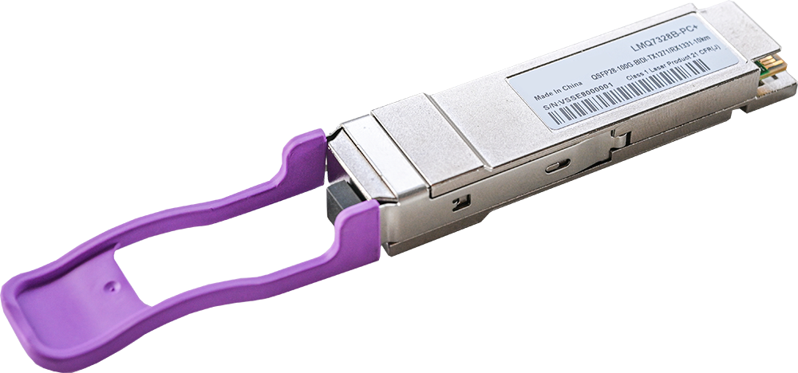
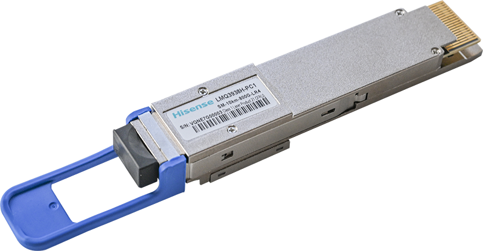
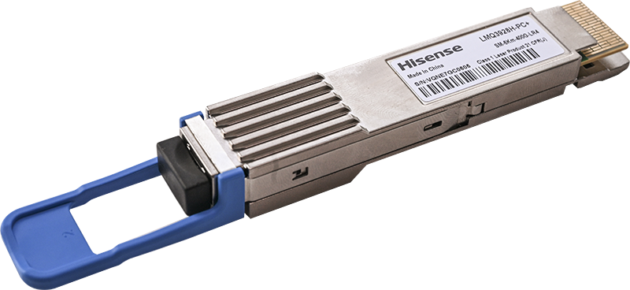
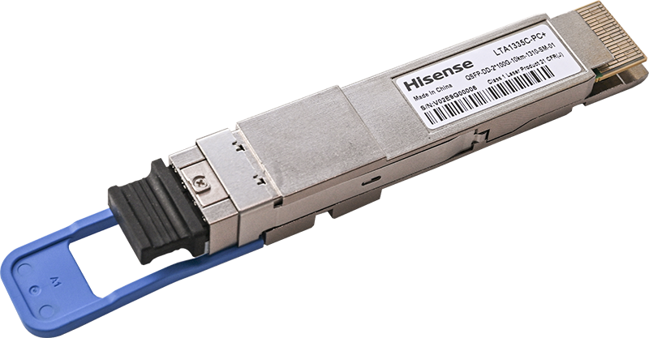
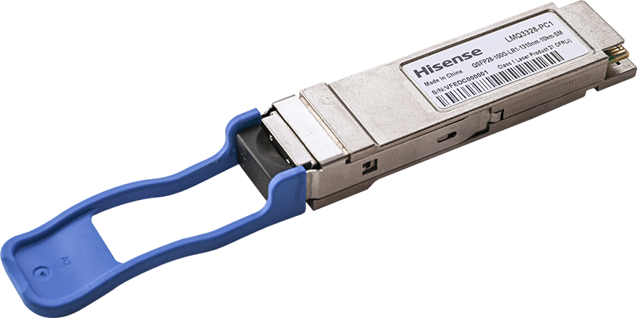
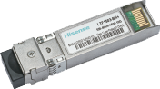

For product portfolio and reach options, please contact us.
← Solutions
Metro Long Haul
800G, 400G, 200G, and 100G Long Reach transceivers and BiDi transceivers for metro and long-haul transport networks—enabling high-speed data transmission over extended distances and bidirectional communication over a single fiber with WDM for greater efficiency and lower infrastructure costs.
Product Portfolio
800G (200G per lane) Family

- 800G QSFP-DD LR4 Reach: 10 Km | Client: 8x100GbE | 0 to 70℃ operating temperature | Compliant with IEEE 802.3dj and CMIS 5.0
- 800G QSFP-DD FR4 Reach: 2 Km | Client: 8x100GbE | 0 to 70℃ operating temperature | Compliant with IEEE 802.3dj and CMIS 5.0
- 800G OSFP LR4 Reach: 10 Km | Client: 8x100GbE | 0 to 70℃ operating temperature | Compliant with IEEE 802.3dj and CMIS 5.0
- 800G OSFP FR4 Reach: 2 Km | Client: 8x100GbE | 0 to 70℃ operating temperature | Compliant with IEEE 802.3dj and CMIS 5.0
- 800G OSFP DR4 Reach: 500m | Client: 8x100GbE | 0 to 70℃ operating temperature | Compliant with IEEE 802.3dj and CMIS 5.0
800G (100G per lane) Family

- 800G OSFP 2xPLR4 EML engine | Reach: 10 Km | Client 8x100G-PAM4 | 0 to 70℃ operating temperature | Compliant with IEEE802.3df
- 800G OSFP PLR8 EML engine | Reach: 10 Km | Client 8x100G-PAM4 | 0 to 70℃ operating temperature | Compliant with IEEE802.3df
- 800G OSFP 2xLR4 EML engine | Reach: 10 Km | Client 8x100G-PAM4 | 0 to 70℃ operating temperature | Compliant with IEEE802.3df
400G (100G per lane) Family

- 400G QSFP-DD FR4/LR4 Reach: 10 Km | Client: 4x100GbE and 4xOTU4 | 0 to 70℃ operating temperature | Compliant with IEEE 802.3cu, 100G Lambda MSA 400G-LR4-10, CMIS 4.0 and ITU-T grid | Hermetic
200G Family

- 200G QSFP-DD 2xLR4 single and dual rate InP engine | Reach: 10 Km | Client: 8 interfaces at 25.78Gb/s and 27.9Gb/s | 0 to 70℃ operating temperature | Compliant with IEEE 802.3ba, CMIS 4.0 and ITU-T grid
100G Family

- 100G QSFP28 LR1 Dual rate InP engine | Reach: 10 Km | Client: 100GbE and OTU4 | 0 to -70℃ operating temperature | Compliant with IEEE 802.3cu, SFF-8636
- 100G QSFP28 LR1 Single rate InP engine | Reach: 10 Km | Client: 100GbE | C-temp (0 to 70℃) and I-Temp (-40 to 85℃) | Compliant with IEEE 802.3cu, SFF-8636
- 100G QSFP28 BIDI Reach: 10Km (30Km available) | Client: 50G-PAM4 | 0 to 70℃ operating temperature | Compliant with IEEE 802.3bm
- 100G QSFP28 LR4 Single and Dual rate Client: 100GbE (single) and OTU4 | Reach: 10 Km | 0 to 70℃ operating temperature | Compliant with IEEE 802.3ba, SFF-8636, ITU-T grid | Hermetic
10G Family

- 10G SFP+ LR Reach: 10Km | Client: 10G | -40 to 85℃ operating temperature | Compliant with IEEE802.3ae
- 10G SFP+ ER/ZR InP engine | Reach: 40Km (ER) and 80Km (ZR) | Client 10GbE | C-temp and I-Temp | Compliant with IEEE802.3ae 10GBASE-ER, SFF-8431, SFF8472 and OTN (CDR)